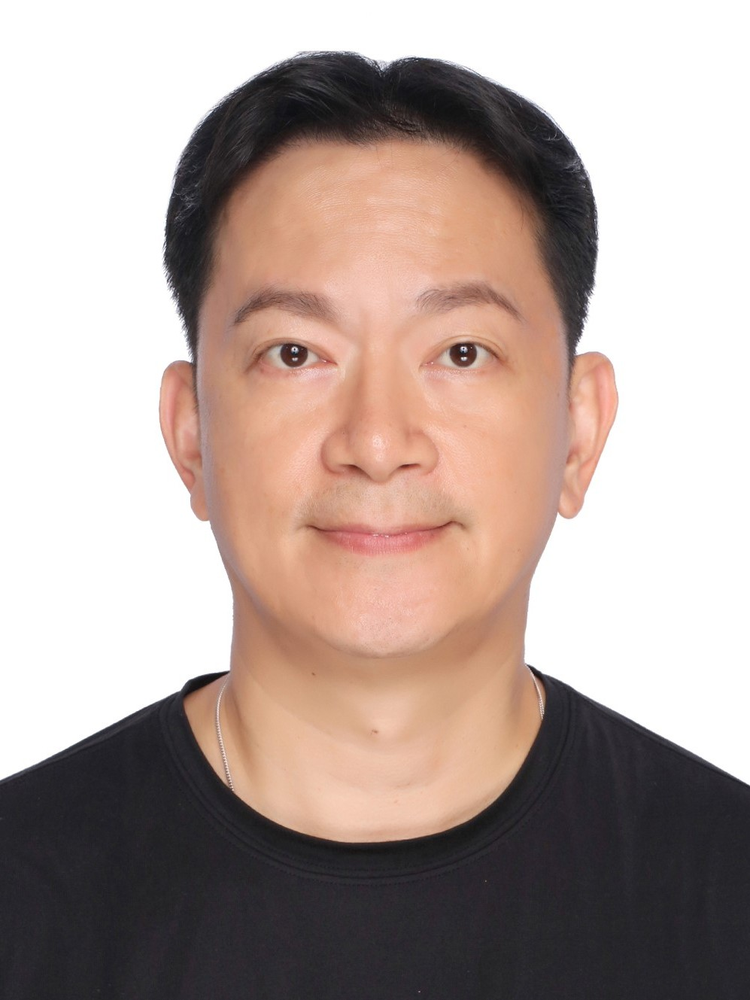

ISO 50001｜碳盤查｜能源管理｜供應鏈減碳｜AI 永續轉型
ISO 50001 • Carbon Inventory • Energy Management • AI Sustainability
面對碳費、供應鏈減碳壓力、ESG揭露要求與能源成本上升，我們協助企業建立可落地的永續治理策略，從能源管理、ISO制度、碳盤查到AI數據分析，提供企業真正可執行的淨零轉型解決方案。
I help enterprises turn ESG pressure, carbon fees, supply-chain requirements, and rising energy costs into practical sustainability and net-zero transformation strategies.

多數企業在推動 ESG、碳盤查與能源管理時，面臨制度建立困難、缺乏專業人才、無法有效整合數據，以及供應鏈減碳壓力等挑戰。
企業面臨 ESG 揭露、碳費制度、供應鏈減碳與國際永續規範要求。
能源價格波動與高耗能製程，讓企業必須建立能源效率與節能管理能力。
企業常缺乏可落地執行的 ESG、ISO 系統與 AI 數據分析整合方案。
透過30年以上能源與永續實務經驗，結合 ISO 國際標準、碳管理制度與 AI 技術，協助企業建立可執行、可驗證、可持續優化的永續治理架構。
CLIENT EXPERIENCE
擁有超過200家企業能源管理、ESG與ISO系統輔導經驗，涵蓋半導體、電子製造、醫療、工程與高科技產業。
可進一步串接 OpenAI API 與能源管理知識庫，建立專屬 AI 永續顧問助理，提供 ESG、ISO 50001、碳盤查與能源管理即時問答。
AI Assistant:
• 我們公司如何開始 ISO 50001？
• 如何規劃供應鏈減碳？
• 能源效率與碳盤查資料如何整合？